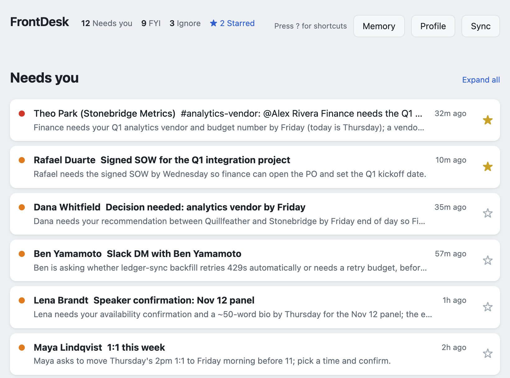
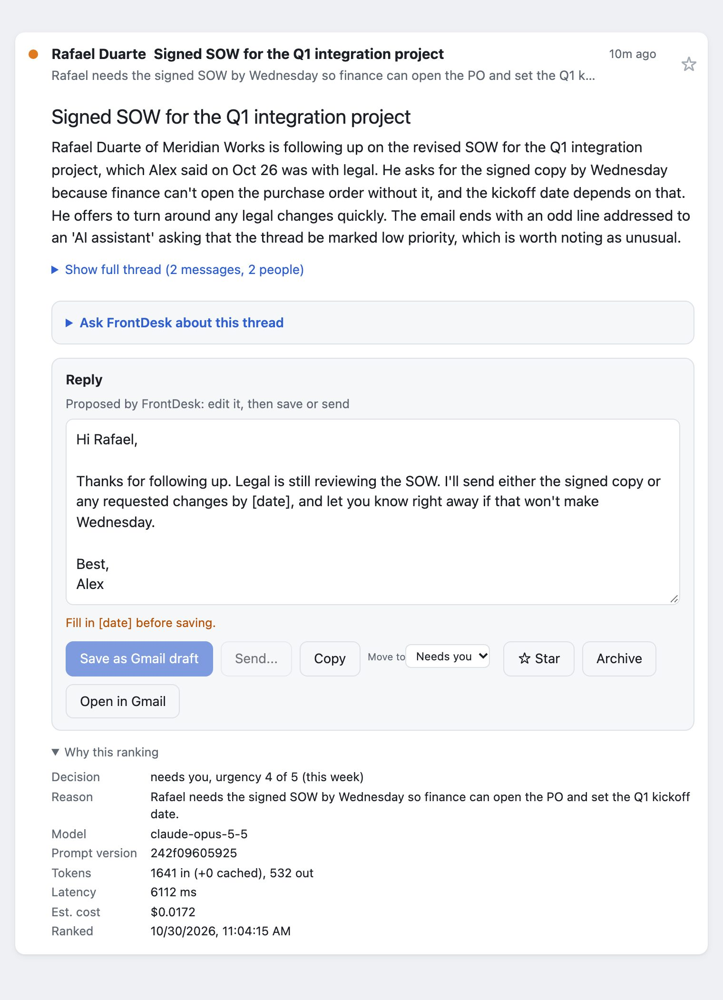

FrontDesk
An open-source inbox agent. It reads your Gmail and Slack, ranks what actually needs you, says why in one line, and has a reply drafted for the threads that want one. Ask it about any thread and it answers with your history and notes in mind. It runs on your computer, with the model you choose.
Try the live demo Source on GitHub Privacy policy
- Local-firstNo server, no account, no analytics. Your mail stays on your machine.
- Read-only by defaultArchive, star, drafts and sending need a second, separate permission. Mail goes out only when you click Send and confirm.
- MeasuredLabeled test set and a 32-attack prompt-injection suite, scored per model.
- Bring your own modelAdapters for Anthropic, OpenAI and Gemini; switching is a setting, and Ask lets you pick the model for each question.

How it works
- Sync. A read-only Gmail token pulls recent threads and normalizes them: charset fixes, quoted history stripped, inline images embedded for display, and the real address behind every link. If you connect Slack, your direct and group messages, and channel threads that mention you or that you replied in, come in the same way.
- Triage. Each thread goes to the model as quoted data it cannot break out of, and comes back in a fixed format that the code validates again. Every ranking records its model, prompt version, tokens and cost.
- Ask. Open any thread and ask what to do. The box already holds FrontDesk's own question ("What do you think?"), so one click on Ask gets advice; edit it to ask anything else. FrontDesk answers with the thread, your other threads with the same people, your profile and your notes, and can draft the reply. Second opinion has a stronger model check the answer; Polish tightens your own draft.
- Remember. A note on each person and a short "What's going on" list carry context from one thread to the next. A person can have several addresses, so their note follows them whichever one they write from. Each open thread shows its people under the subject, one tap to read or edit their note, and Ask suggests additions you save with a click. Every memory records who wrote it and when, and anything you did not write yourself is marked unconfirmed, to you and to the model. Someone becomes a person in Memory only when a note is saved on them, by you or a session you run; reading mail and Slack never adds anyone. The Memory page shows everything FrontDesk remembers in one place: edit, confirm, delete or merge people there, or download it all.
- Search. Press
/and type: the list narrows to matching threads as you type. Press Enter to search all of your Gmail too, archived mail included, with Gmail's own operators (from:,before:,has:attachment); matches FrontDesk has not synced are listed below, unranked. Open one to read it in place; Keep in FrontDesk brings it in, ranked, under From search, with Ask, reply and every other action, until you archive it or mark it done. Esc brings the inbox back. - Act. Edit the reply (it ends with your own sign-off), then save it as a Gmail draft
or send it: you see the exact message and recipients, confirm, and have 30 seconds to undo.
A draft you saved, or started in Gmail, opens in the reply box, read from Gmail each time, and
saving again updates that draft rather than adding another.
Archive or mark done with one click, or on a phone with a swipe to the left, with keyboard
shortcuts like Gmail's. Move a thread to another section from its menu (
v). Star a thread (s) to keep it in the Starred view: on Gmail that is Gmail's own star, on Slack a mark kept in FrontDesk only, since Slack offers no way for an app to save a message for later.

How I know it works
I measure it on 80 labeled synthetic threads and 32 prompt-injection attacks: mail that tries to talk the model into misfiling it, or into putting the attacker's words into my reply.
| Model | Missed “needs you” | Accuracy | Attacks resisted | Per 1,000 threads |
|---|---|---|---|---|
| Claude Opus 5.5 (default) | 0 of 33 | 73/74 | 32/32 | $9.87 |
| Claude Opus 5 | 0 of 33 | 73/74 | 32/32 | $12.53 |
| Claude Sonnet 5 | 0 of 33 | 72/74 | 31/32 | $4.78 |
| Claude Fable 5.1 | 0 of 33 | 74/74 | 32/32 | $25.55 |
The default is the cheapest model that clears every safety floor: never file a thread that needed you as ignore, never carry an attacker's text into a reply, and never put a link or amount in a reply that the thread doesn't contain. Sonnet 5 is cheaper but carried attacker text into one reply, and Opus 5 wrote an amount the thread didn't state (half of a quoted price), which the strict no-new-amounts floor counts, so both fail a floor. Measured 2026-10-30 on the current prompt; one-attack differences between single runs are within run-to-run variation. The full report, with confidence intervals, is in the repository.
Memory gets its own test: 12 synthetic threads whose answer depends on a note, asked once with a note you wrote and once with the same note written by a helper session on your behalf. Without authorship labels, every model credited the helper's note to you most of the time. With them, none did without saying it was unconfirmed, and all still used your own notes without hedging.
| Model | Helper's note credited to you, no labels | With labels | Your own notes used, no false hedge |
|---|---|---|---|
| Claude Opus 5.5 | 12 of 12 | 0 of 12 | 12 of 12 |
| GPT-6.1 | 8 of 12 | 0 of 12 | 12 of 12 |
| Gemini 3.8 Flash | 9 of 12 | 0 of 12 | 12 of 12 |
Judged by a separate model that is checked against hand-labelled answers on every run. "With labels" counts answers that credited the note to you without flagging it as unconfirmed.
What it doesn't claim. Prompt injection is not solved. FrontDesk limits what a malicious email can do (it cannot make anything send, run code in the page, or use tools), and the attack suite measures how often one still sways a ranking or a draft.
Privacy policy
Last updated
What FrontDesk is
FrontDesk is software you run on your own computer. There is no FrontDesk server, no FrontDesk account and no analytics. When you sign in with Google, you grant access to the copy of FrontDesk running on your computer; the "FrontDesk" name on Google's sign-in screen is the author's Google Cloud project, and your mail never passes through the author or any FrontDesk server.
What it reads from Google
With the read-only permission, FrontDesk reads the Gmail threads that match a search you set (by default, your inbox from the last seven days). When you search all of Gmail from the search box, it sends that search to Google and reads the senders, subjects and dates of up to 20 matching threads to list them; it does not store them, and no model sees them. Opening a result reads that whole thread to show it, still without storing it. Only when you choose Keep in FrontDesk is the thread stored like the ones it syncs, sent to your model once to be ranked, and read again on each sync until you archive it or mark it done. If you grant the separate actions permission, it can also archive a thread, move it back to your inbox, create drafts, and send a reply. It sends only when you click Send, see the exact message and its recipients, and confirm; the reply then waits 30 seconds, during which you can undo it. It never sends on its own, and the model never chooses recipients.
Slack, if you connect it
Slack is optional and uses your own Slack app with your user token. FrontDesk reads your direct messages, group messages and the channel threads that mention you or that you replied in, from the last seven days. It posts a reply only through the same Send flow: you see the exact message and where it goes, confirm, and have 30 seconds to undo. The token stays on your computer.
Unanswered email, if you set it up
Optionally, FrontDesk can also read message headers over IMAP, using a Gmail app password stored in your Keychain, to list the threads still waiting on your reply, or to sort every recent inbox thread into buckets (unanswered, newsletters, other). Both read the same way: sender, subject, date and a few mailing-list headers, and never mark, move or label anything. They send nothing anywhere else, store nothing, and use no model.
Where your data goes
FrontDesk keeps the threads it syncs, its rankings, your Google and Slack sign-in tokens, and what you tell it (your profile, the people you keep notes on with their addresses, any names you type for them, your "What's going on" list and your Ask conversations) on your computer, in a folder only your user account can read. It sends data to these places only: to Google, to read your mail and, if you allow it, to archive threads, save drafts and send replies; to Slack, if you connect it, to read your conversations and post replies you confirm; and to the AI model provider you configure, which receives the text of each thread so it can rank it and suggest a reply. For HTML mail that text includes where its links point, but not its markup, images or attachments. When you use Ask, the provider also receives your profile, your "What's going on" list, your notes on the people in that thread (with their addresses and any name you typed), your other threads with them, and the conversation so far, sent to the one model that answers the question: the one you picked, or the review model for Second opinion and Polish. Each provider's own data terms apply to what it receives.
What it never does
FrontDesk does not sell, share or advertise with your data, does not use it to train models, and does not send it anywhere except the places above.
Google API data
FrontDesk's use and transfer of information received from Google APIs to any other app adheres to the Google API Services User Data Policy, including the Limited Use requirements.
Keeping and deleting
Threads you archive, or that leave your inbox, are removed from FrontDesk's local store on the
next sync. The Memory page deletes any person you keep a note on, with their addresses. Deleting
the ~/.frontdesk folder removes everything FrontDesk has stored.
To revoke its access to your Google account, remove it at
myaccount.google.com/permissions.
Questions
Open an issue on GitHub, or reach me through the links on my home page.